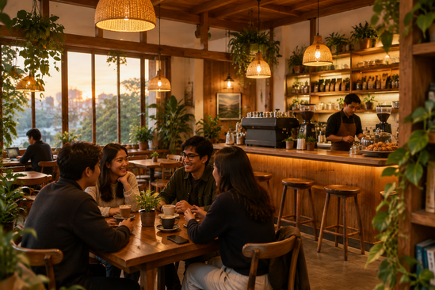

Contoh ulasan
Tempat istirahat sejenak
Suasananya hangat dan santai. Pas untuk menikmati kopi sambil ngobrol setelah hari yang panjang.
— Pengunjung Kopi Kita
Cerita dari meja ke meja
Tempat yang nyaman, kopi hangat, dan obrolan yang rasanya ingin dilanjutkan lagi besok.

Baca ceritanya
Contoh ulasan berikut adalah konten ilustrasi untuk pratinjau website, bukan testimoni pelanggan terverifikasi.
Suasananya hangat dan santai. Pas untuk menikmati kopi sambil ngobrol setelah hari yang panjang.
— Pengunjung Kopi Kita
Tempatnya nyaman untuk datang bersama teman, ngobrol santai, dan menikmati minuman favorit.
— Pengunjung Kopi Kita
Aroma kopi dan suasana kedainya bikin betah. Rasanya ingin kembali untuk mencoba menu lain.
— Pengunjung Kopi Kita
Punya cerita setelah berkunjung? Sampaikan langsung kepada tim Kopi Kita agar ulasan asli dapat ditampilkan di sini.